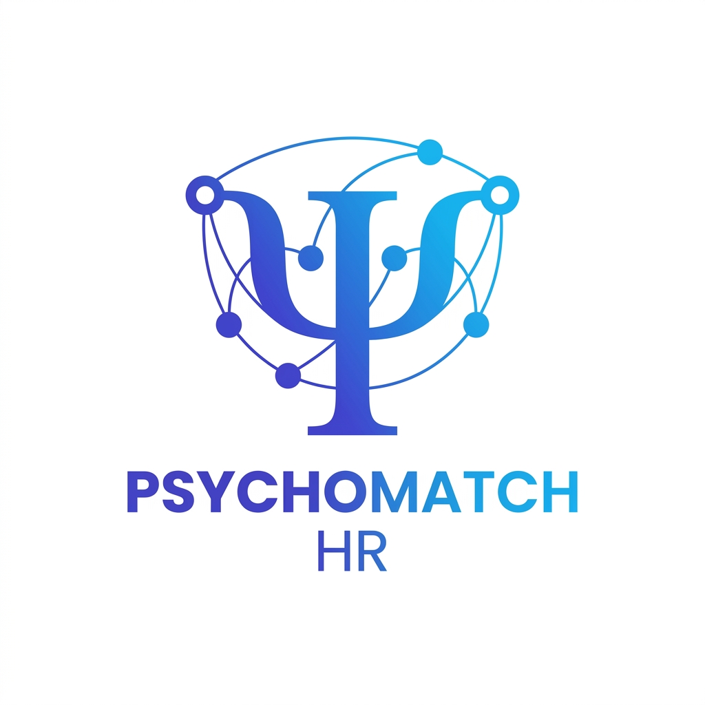
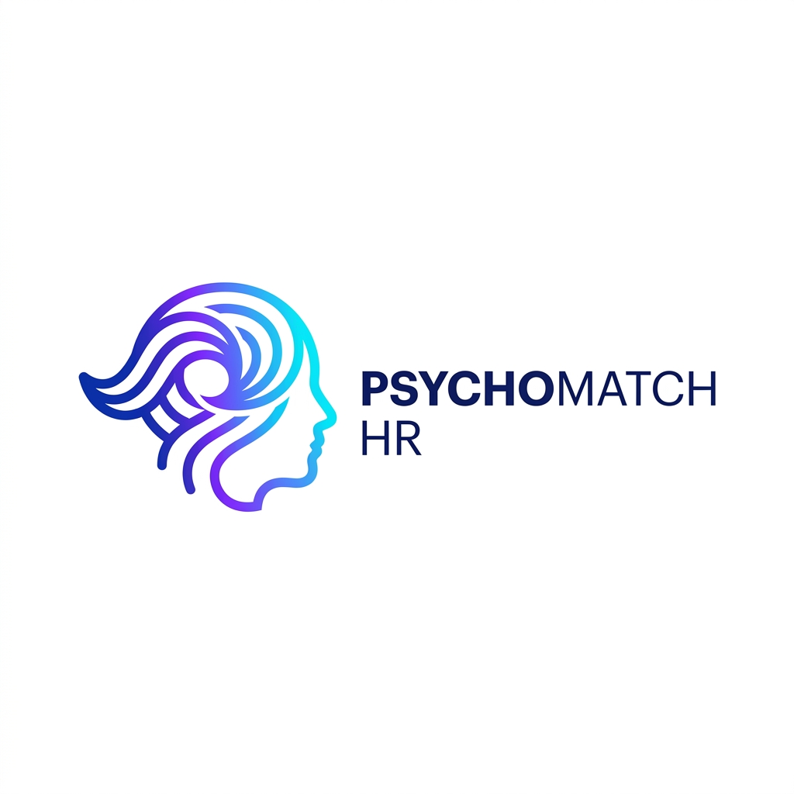
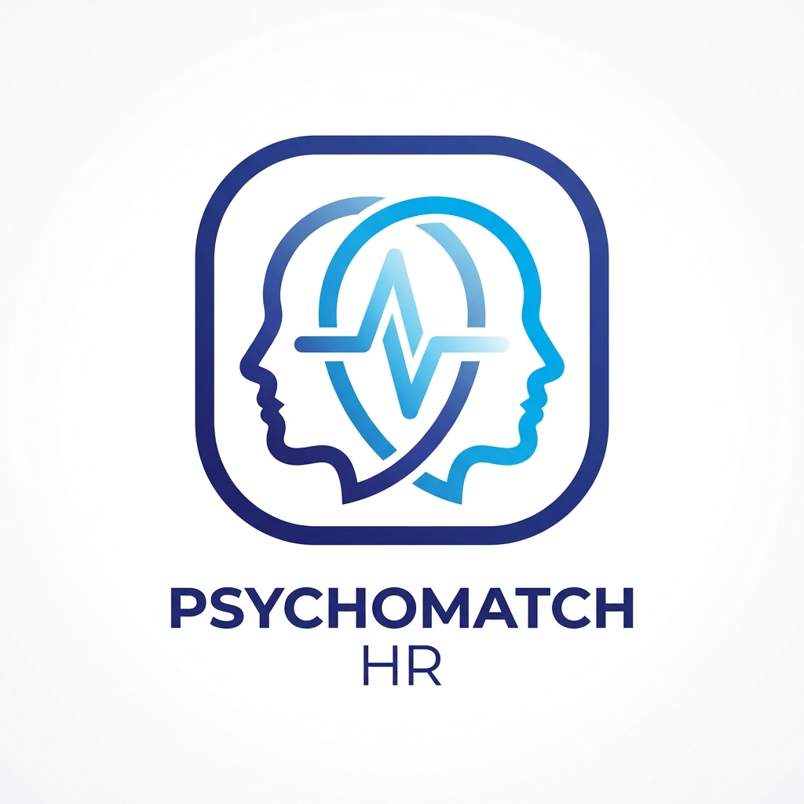

Aşağıdaki 4 konsept arasından markanıza en çok uyan tasarımı seçebilirsiniz.

Psikolojinin sembolü Psi (Ψ) harfini İK veri ağları ve aday eşleşme düğümleriyle birleştiren bilimsel ve teknolojik kurumsal logo.

Big Five (OCEAN) kişilik modelini temsil eden akıcı zihin ve dalga profili. İnsan psikolojisinin derinliğini simgeler.

Aday ve pozisyon uyum nabzını (pulse) simgeleyen modern uygulama ikonu stili. Mobil ve web için şık görünüm.
P ve M harflerinden oluşan, içinde gizli insan silüeti ve onay imi barındıran güçlü B2B kurumsal logosu.